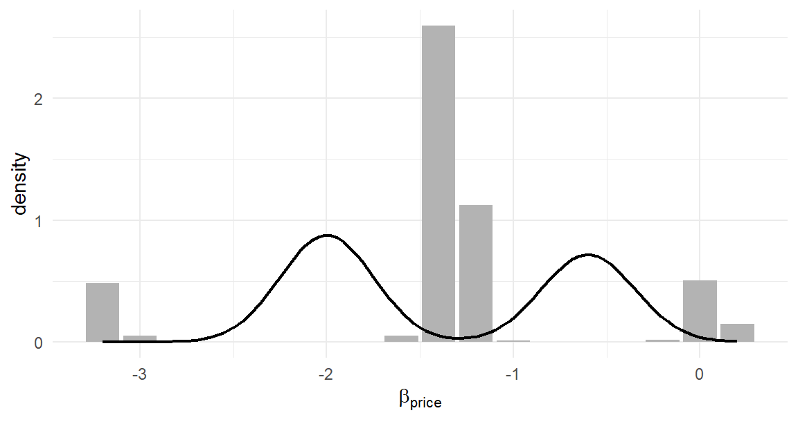

Every chapter until now taught you models other people built. This one teaches the move that matters for your own research: changing a model — because your data have a feature the standard models ignore, or your theory implies behavior they cannot express. The introduction promised that the true value of choice modeling is the ability to create tailor-made models; here is where the promise is kept, three times, on three extensions drawn from live research literatures.
The method is the one this book has been rehearsing since Chapter 1, now stated as a recipe:
Change the model — a new term in utility, a new choice rule \(h\), a new distribution somewhere in the hierarchy.
Re-derive the choice probability (or recognize that a known one still applies).
Write the simulator first. If you cannot simulate it, you do not understand it yet.
Modify the likelihood or the sampler — usually a handful of lines in code you already have.
Simulate-and-recover before real data ever enters. The answer key is the only proof your estimator works.
Watch the recipe’s economy in what follows: each extension changes remarkably little code, because Part I’s architecture — stacked data, kernel likelihood functions, modular samplers — was designed to be extended. That was the point all along.
22.1 Extension 1: The No-Choice Option
The problem. Our laptop study forces a choice: every task ends with one of three laptops “bought.” Real shoppers walk away, and a model estimated on forced choices systematically overstates demand — every simulated market in Chapter 21 implicitly assumed everyone buys something. The standard repair adds a no-choice option (“I would not buy any of these”) to each task (Brazell et al. 2006).
The model change. The none option is a fourth alternative whose utility has no attributes — nothing about it varies — so it is pure constant plus noise:
One new parameter. And here Section 4.5’s groundwork pays off: in the long data format, the none option is just another row — attribute columns zero, a none dummy equal to one — and the MNL machinery does not know or care that one alternative is special. The choice probabilities, likelihood, gradient, and code are all unchanged.1
Simulate, estimate, recover — the recipe executed in one block. The simulator is Section 7.6’s with a fourth row per task; the estimator is literallyloglik_mnl():
set.seed(220)sim_none_data <-function(N, T, beta, gamma_none) { J <-3; n_rows <- N * T * J df <-data.frame(id =rep(seq_len(N), each = T*J),task =rep(rep(seq_len(T), each = J), times = N),alt =rep(1:J, times = N*T),brand =factor(sample(c("Acer","Dell","Apple"), n_rows, TRUE),levels =c("Acer","Dell","Apple")),ram =factor(sample(c("8","16","32"), n_rows, TRUE),levels =c("8","16","32")),screen =factor(sample(c("13","15"), n_rows, TRUE),levels =c("13","15")),price =round(runif(n_rows, 0.8, 2.4), 2)) X <-cbind(model.matrix(~ brand + ram + screen + price, df)[, -1],none =0)## append one none row per task: all-zero attributes, none dummy = 1 Xn <- X[df$alt ==1, ]; Xn[] <-0; Xn[, "none"] <-1 X <-rbind(X, Xn) ids <-c(df$id, df$id[df$alt ==1]) tsks <-c(df$task, df$task[df$alt ==1]) ord <-order(ids, tsks, c(df$alt, rep(4, sum(df$alt ==1)))) X <- X[ord, ]; ids <- ids[ord]; tsks <- tsks[ord] task_id <-cumsum(!duplicated(cbind(ids, tsks))) U <-as.vector(X %*%c(beta, gamma_none)) -log(-log(runif(nrow(X)))) choice <-as.integer(ave(U, task_id, FUN =function(u) u ==max(u)))list(X = X, y = choice, task_id = task_id, id = ids)}beta_true <-c(dell =0.5, apple =1.0, ram16 =0.6, ram32 =0.9,screen15 =0.3, price =-1.2)gamma_true <--0.5# none is mildly unattractived1 <-sim_none_data(500, 8, beta_true, gamma_true)mean(rowsum(d1$y * (d1$X[, "none"] ==1), d1$task_id)) # share choosing none
[1] 0.264
About a fifth of tasks end in “none” — real demand information the forced design threw away. Estimation requires nothing new:
loglik_mnl <-function(beta, y, X, task_id) { # @sec-mnl-mle, untouched V <-as.vector(X %*% beta); Vmax <-ave(V, task_id, FUN = max) eV <-exp(V - Vmax)sum((V - Vmax -log(rowsum(eV, task_id)[task_id]))[y ==1])}fit1 <-optim(rep(0, 7), loglik_mnl, y = d1$y, X = d1$X, task_id = d1$task_id,method ="BFGS", control =list(fnscale =-1), hessian =TRUE)round(rbind(truth =c(beta_true, none = gamma_true),est = fit1$par,se =sqrt(diag(solve(-fit1$hessian)))), 2)
dell apple ram16 ram32 screen15 price none
truth 0.50 1.00 0.60 0.90 0.30 -1.20 -0.50
est 0.53 1.02 0.67 0.84 0.33 -1.20 -0.52
se 0.06 0.06 0.06 0.06 0.05 0.05 0.10
Recovery, including the new parameter. Total new code: a simulator variant. Total new estimation code: zero — the none option was a data change, which is the least expensive kind of extension there is.
The dual-response refinement, in brief, because practice uses it heavily (Diener, Orme, and Yardley 2006; Brazell et al. 2006): asking “which would you choose?” and then “would you actually buy it?” keeps the forced task’s statistical efficiency while measuring purchase intent. The likelihood treats the two answers as two choices sharing parameters — the first over the \(J\) products, the second between the winner and none — and Diener, Orme, and Yardley (2006)’s practical insight is that the second response can be stacked as an additional pseudo-task in the long data, after which standard MNL/HB software estimates it unmodified: another extension executed entirely in the data layer. The modern frontier connects the none utility to economic primitives — Hung, Liu, et al. (2025) derive it from a budget constraint, which is precisely where our second extension goes.
22.2 Extension 2: A Budget Constraint
The problem. For laptops — or cars, or houses — some shoppers simply cannot pay premium prices, no matter their tastes. A linear price term says a $2,400 laptop is merely less attractive; a budget says it is not an option. Models that ignore binding budgets misestimate price response exactly where pricing decisions live, overstating premium demand — the bias Pachali, Kurz, and Otter (2022) document in conjoint studies of exactly our product category.
The model change — and this one, unlike Extension 1, changes the behavioral rule \(h\) itself. Following the spirit of Pachali, Kurz, and Otter (2022) (simplified to a common budget \(\tau\) for transparency): alternatives priced above \(\tau\) are screened out — infeasible, never chosen — and money left under the budget enters utility with diminishing returns:
(The \(\log(\tau - p)\) term is the utility of the outside numeraire — what the unspent budget buys — and it is where the price sensitivity now lives; there is no separate linear price coefficient.2) The MNL probability survives with two amendments: the choice set shrinks to the feasible alternatives, and utilities gain curvature in price that grows explosive as \(p \to \tau\). Both are visible in behavior — shoppers never choosing above a ceiling, and price sensitivity concentrating near it — which is what identifies \(\tau\).
Simulator first, per the recipe — and note how Equation 22.2 transcribes:
set.seed(221)sim_budget_data <-function(N, T, beta, alpha, tau) { J <-3; n_rows <- N * T * J df <-data.frame(id =rep(seq_len(N), each = T*J),task =rep(rep(seq_len(T), each = J), times = N),alt =rep(1:J, times = N*T),brand =factor(sample(c("Acer","Dell","Apple"), n_rows, TRUE),levels =c("Acer","Dell","Apple")),ram =factor(sample(c("8","16","32"), n_rows, TRUE),levels =c("8","16","32")),screen =factor(sample(c("13","15"), n_rows, TRUE),levels =c("13","15")),price =round(runif(n_rows, 0.8, 2.4), 2)) X <-model.matrix(~ brand + ram + screen, data = df)[, -1] # note: no price column V <-as.vector(X %*% beta) +ifelse(df$price < tau, alpha *log(tau - df$price), -Inf) U <- V -log(-log(runif(n_rows))) task_id <-cumsum(!duplicated(df[, c("id","task")])) df$choice <-as.integer(ave(U, task_id, FUN =function(u) u ==max(u)))list(df = df, X = X, task_id = task_id)}beta_np <-c(dell =0.5, apple =1.0, ram16 =0.6, ram32 =0.9, screen15 =0.3)alpha_true <-1.4; tau_true <-2.6# budget $2,600: binding for top pricesd2 <-sim_budget_data(500, 8, beta_np, alpha_true, tau_true)max(d2$df$price[d2$df$choice ==1]) # nobody chose above tau... check
[1] 2.4
(A task where all three laptops exceed \(\tau\) would have no feasible option; with our price range topping out at $2,400 < \(\tau\), the issue does not arise here, but your own version must decide what shoppers do then — a none option, Extension 1, is the natural coupling. Model changes interact; simulators surface the interactions before referees do.)
The likelihood amends the Chapter 8 kernel in exactly the two places the model changed — the utility line gains the budget term, and infeasible rows carry \(-\infty\) (which the log-sum-exp machinery handles gracefully: \(e^{-\infty} = 0\) drops them from the denominator):
loglik_budget <-function(theta, y, X, price, task_id) { K <-ncol(X) beta <- theta[1:K]; alpha <- theta[K+1]; tau <- theta[K+2]if (tau <=max(price[y ==1])) return(-1e10) # chosen>tau impossible V <-as.vector(X %*% beta) + alpha *log(pmax(tau - price, 1e-12)) V[price >= tau] <--Inf Vmax <-ave(V, task_id, FUN = max) eV <-exp(V - Vmax)sum((V - Vmax -log(rowsum(eV, task_id)[task_id]))[y ==1])}
One wrinkle deserves its sentence: the feasibility screen makes the likelihood zero for any \(\tau\) below the highest chosen price — the data flatly refute such budgets — so the parameter space has a data-dependent boundary, and the surface is non-smooth in \(\tau\) at every observed price point. Textbook MLE regularity has left the building.[^3] Practical estimation is untroubled: profile the likelihood on a grid of \(\tau\) (grid search’s redemption arc, from Section 5.7) with the smooth parameters maximized at each point:
Figure 22.1: The profile log-likelihood over the budget parameter. The data reject budgets below the highest chosen price outright (left boundary), climb to a well-defined peak near the true $2,600, and fall away as larger budgets flatten the log(tau - p) curvature the choices exhibit.
Recovery — including a latent budget no survey question asked about, identified purely from where price sensitivity concentrates. The research road map from here is Pachali, Kurz, and Otter (2022)’s: make \(\tau_n\) person-specific with a hierarchical prior (the Chapter 17 machinery — the budget becomes one more transformed coefficient, log-normal to stay positive, sampled in the person-level Metropolis block), let stated budget questions enter as noisy indicators of \(\tau_n\) rather than truth, and watch premium-price demand curves correct themselves by double-digit percentages. Every component is in your toolkit already.
22.3 Extension 3: A Flexible Mixing Distribution
The problem. Parts II–III assumed tastes are normally distributed — always unimodal, symmetric, thin-tailed. Suppose the true market is polarized: a budget segment and a premium segment with little in between. A normal mixing distribution will report the average of two camps and the spread between them — a distribution centered where almost nobody lives (Chapter 21’s warning, at the population level).
The model change, following Train (2016)’s logit-mixed logit in one dimension: replace the price coefficient’s normal distribution with a nonparametric distribution on a grid. Fix \(G\) candidate values \(b_1, \ldots, b_G\) spanning the plausible range; estimate the probability mass \(w_g\) on each, via a softmax in free parameters (\(w_g \propto e^{\theta_g}\) — Chapter 11’s device). One normalization before coding it: adding a constant to every \(\theta_g\) leaves the softmax weights unchanged — the level unidentifiability of Section 7.5, back again — so we pin \(\theta_1 = 0\) and estimate the remaining \(G-1\) free parameters. That is the c(0, theta) in the code below. The reader who has reached this chapter sees immediately what this is: a latent class model where the class locations are frozen to a grid and only the shares are estimated — flexibility through many cheap classes rather than a few expensive ones.
The estimation insight that makes it practical — and this is the trick worth stealing for other models: person \(n\)’s sequence likelihood at grid point \(g\), \[L_{ng} = \prod_{t=1}^{T} P_{nt}\big(y_{nt} \mid \beta_{\text{price}} = b_g\big)\] — the ordinary MNL likelihood of person \(n\)’s whole sequence with the price coefficient frozen at grid value \(b_g\) (and the other coefficients at their step-1 values; persll_at() returns its log, one column of an \(N \times G\) matrix per grid point) — does not depend on the weights. Compute the \(N \times G\) matrix of \(L_{ng}\)once; thereafter the log-likelihood
costs a matrix-vector product per evaluation — the optimizer runs on a precomputed likelihood, and estimation takes seconds regardless of how expensive the kernel was [Train (2016) reports 69 mixing parameters estimated in 18 seconds; ours is humbler]:
set.seed(222)## simulate a polarized market: price coefficient is bimodal, others fixedsim_laptop_design <-function(N, T, J) { n_rows <- N * T * Jdata.frame(id =rep(seq_len(N), each = T*J),task =rep(rep(seq_len(T), each = J), times = N),alt =rep(seq_len(J), times = N*T),brand =factor(sample(c("Acer","Dell","Apple"), n_rows, TRUE),levels =c("Acer","Dell","Apple")),ram =factor(sample(c("8","16","32"), n_rows, TRUE),levels =c("8","16","32")),screen =factor(sample(c("13","15"), n_rows, TRUE),levels =c("13","15")),price =round(runif(n_rows, 0.8, 2.4), 2))}N <-1000; T <-8df <-sim_laptop_design(N, T, 3)X <-model.matrix(~ brand + ram + screen + price, data = df)[, -1]K <-ncol(X)task_id <-cumsum(!duplicated(df[, c("id","task")]))b_fixed <-c(dell =0.5, apple =1.0, ram16 =0.6, ram32 =0.9, screen15 =0.3)bp_n <-ifelse(runif(N) <0.55, rnorm(N, -2.0, 0.25), rnorm(N, -0.6, 0.25))V <-as.vector(X[, 1:5] %*% b_fixed) + X[, 6] * bp_n[df$id]U <- V -log(-log(runif(nrow(X))))df$choice <-as.integer(ave(U, task_id, FUN =function(u) u ==max(u)))
## step 1 (approximation, disclosed): fix non-price coefficients at MNL estimatesmnl <-optim(rep(0, K), loglik_mnl, y = df$choice, X = X, task_id = task_id,method ="BFGS", control =list(fnscale =-1))## step 2: precompute person-by-gridpoint log-likelihoodsgrid_b <-seq(-3.2, 0.2, length.out =18)id_of_task <- df$id[!duplicated(task_id)]persll_at <-function(bp) { V <-as.vector(X[, 1:5] %*% mnl$par[1:5]) + X[, 6] * bp Vmax <-ave(V, task_id, FUN = max) eV <-exp(V - Vmax) logP <- (V - Vmax -log(rowsum(eV, task_id)[task_id]))[df$choice ==1]as.vector(rowsum(logP, id_of_task))}llng <-sapply(grid_b, persll_at) # N x G, computed ONCE## step 3: maximize over the weights -- each evaluation is trivialloglik_lml <-function(theta, llng) { lw <-c(0, theta) -log(sum(exp(c(0, theta)))) # log softmax weights M <-apply(sweep(llng, 2, lw, `+`), 1, max)sum(M +log(rowSums(exp(sweep(llng, 2, lw, `+`) - M))))}fit3 <-optim(rep(0, length(grid_b) -1), loglik_lml, llng = llng,method ="BFGS", control =list(fnscale =-1, maxit =1000))w_hat <-exp(c(0, fit3$par)); w_hat <- w_hat /sum(w_hat)
true_dens <-function(x) 0.55*dnorm(x, -2.0, 0.25) +0.45*dnorm(x, -0.6, 0.25)gap <-diff(grid_b)[1]ggplot(data.frame(b = grid_b, w = w_hat / gap), aes(b, w)) +geom_col(width = gap *0.9, fill ="grey70") +geom_function(fun = true_dens, linewidth =0.8) +labs(x =expression(beta[price]), y ="density")

Figure 22.2: The estimated nonparametric distribution of the price coefficient (bars: mass at each grid point) against the true bimodal density (line). Nobody told the model there were two segments; eighteen grid weights found them. A normal mixing distribution, by construction, could report only the average of the two camps.
Two modes, correct locations, correct proportions — from choice data alone, with a mixing distribution the model was free to shape.3 The disclosed shortcut (fixing the other coefficients first) is the honest price of a demonstration; Train (2016)’s full treatment estimates everything jointly, adds smoothness through spline or polynomial structure on the weights, and extends to multiple dimensions. And the Bayesian reader has already noticed that Equation 22.3’s grid weights would make a lovely Dirichlet-prior Gibbs block — extensions compose across Parts II and III alike.
22.4 Where to Go From Here
Three extensions, three different entry points into the machinery — the data layer (none option), the behavioral rule (budget), the population distribution (flexible mixing) — and none required more than a page of new code. The pattern generalizes to the research frontier: volumetric and multiple-discreteness models change the choice rule to Kuhn–Tucker conditions (Allenby, Hardt, and Rossi 2019); WTP-space models reparameterize utility so preference heterogeneity lives in dollar units (Train 2016; Ben-Akiva, McFadden, and Train 2019); context-dependent none utilities track what respondents learn across tasks (Hung, Kurz, et al. 2025); and the unified framework of Marshall and Bradlow (2002) shows ratings, rankings, and choices as different observation layers over one latent-utility core — extensions of the data model rather than the utility model.
Your own extension will not be on this list; that is the point of it being yours. The recipe at the chapter’s head does not care: change the model, re-derive the probability, simulate first, adjust the estimator, recover before real data. You now own every tool the recipe calls for — which is what this book was for.
22.5 Key Learnings
Custom models are the recipe: model change \(\to\) probability \(\to\)simulator first\(\to\) estimator tweak \(\to\) simulate-and-recover. The architecture built in Part I is what makes each step small.
The no-choice option is a data-layer extension: one all-zero row with an ASC per task, zero new estimation code, and it restores the walk-away margin that forced choice suppresses (with dual-response designs as the practice-standard refinement, also executable in the data layer).
The budget constraint changes \(h\) itself: screening plus \(\log(\tau - p)\) curvature. Its likelihood has a data-dependent boundary and kinks in \(\tau\) — profiled grid search handles what BFGS regularity cannot — and a latent budget is identified from behavior alone. The hierarchical version is Pachali, Kurz, and Otter (2022) and everything it needs is in Chapter 17.
Flexible mixing replaces the normal population with estimated grid weights — latent class with frozen locations — and Train’s precomputed-likelihood trick (\(L_{ng}\) once, then Equation 22.3 in microseconds) makes it nearly free. On polarized data it finds the two camps a normal distribution would average away.
Extensions enter through the data, the rule, or the population — and compose, with each other and with both estimation philosophies. Go build yours.
Allenby, Greg M., Nino Hardt, and Peter E. Rossi. 2019. “Economic Foundations of Conjoint Analysis.” In Handbook of the Economics of Marketing, Volume 1, edited by Jean-Pierre Dubé and Peter E. Rossi, 151–92. North-Holland.
Ben-Akiva, Moshe, Daniel McFadden, and Kenneth Train. 2019. Foundations of Stated Preference Elicitation: Consumer Behavior and Choice-Based Conjoint Analysis. Vol. 10. Foundations and Trends in Econometrics 1–2. Now Publishers.
Brazell, Jeff D., Christopher G. Diener, Ekaterina Karniouchina, William L. Moore, Václav Séverin, and Pierre-Francois Uldry. 2006. “The No-Choice Option and Dual Response Choice Designs.”Marketing Letters 17 (4): 255–68.
Diener, Christopher, Bryan Orme, and David Yardley. 2006. “Dual Response ‘None’ Approaches: Theory and Practice.” In Sawtooth Software Conference Proceedings.
Hung, Ya-Han, Peter Kurz, Rachael Bailey, Joel Huber, and Greg M. Allenby. 2025. “Re-Examining the No-Choice Option in Conjoint Analysis.”Journal of Choice Modelling.
Hung, Ya-Han, Peng Liu, Jeff D. Brazell, and Greg M. Allenby. 2025. “Dual Response in Conjoint Analysis.”Marketing Letters.
Marshall, Pablo, and Eric T. Bradlow. 2002. “A Unified Approach to Conjoint Analysis Models.”Journal of the American Statistical Association 97 (459): 674–82.
Pachali, Max J., Peter Kurz, and Thomas Otter. 2022. “The Perils of Ignoring the Budget Constraint in Single-Unit Demand Models.”Journal of Marketing Research.
Train, Kenneth. 2016. “Mixed Logit with a Flexible Mixing Distribution.”Journal of Choice Modelling 19: 40–53.
The identification bookkeeping: adding a constant-utility alternative is what anchors the utility scale for “buying nothing,” making statements like “share who buy nothing at these prices” meaningful — the quantity Chapter 21 flagged as missing. The deeper behavioral question — is the none utility really constant across tasks? — is live research: Hung, Kurz, et al. (2025) find respondents update the none option’s appeal as tasks teach them market prices, and model exactly that.↩︎
This is the direct-utility formulation of Allenby, Hardt, and Rossi (2019) and Pachali, Kurz, and Otter (2022): choose one product plus outside spending subject to the budget; substitute the constraint into utility; the \(\log\) delivers diminishing marginal utility of money. Our simplification is the common \(\tau\); the research version makes \(\tau_n\) heterogeneous, which the road map below restores.↩︎
Sharp eyes will connect this figure to Chapter 17’s normal-prior HB: run on these polarized data, the normal hierarchy would shrink both camps toward a middle where no one lives. Flexible mixing is not decoration; on the wrong population shape, the normal assumption distorts every downstream deliverable in Chapter 21.↩︎